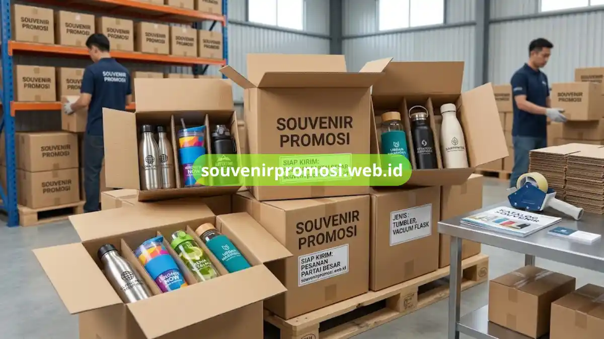

Botol minum custom untuk souvenir promosi adalah merchandise fungsional bercetak logo perusahaan yang dipakai sebagai hadiah event, giveaway, atau apresiasi klien. Delapan jenis populer meliputi stainless steel, tumbler, sport bottle, infused water, hingga botol lipat. Souvenir Promosi menyediakan seluruh varian ini siap cetak dan siap kirim.
Botol minum bukan sekadar wadah air minum. Di dunia merchandise korporat, benda ini menjadi media branding yang dipakai berulang kali oleh penerimanya, sehingga logo perusahaan terus terlihat dalam aktivitas sehari-hari.
Poin Penting
- Botol minum custom cocok untuk souvenir korporat, seminar, dan hadiah karyawan.
- Bahan populer meliputi stainless steel, plastik BPA-free, dan kaca borosilikat.
- Teknik cetak logo umum: sablon, laser engraving, dan digital printing.
- Harga bervariasi tergantung bahan, kapasitas, dan jumlah pemesanan.
- Souvenir Promosi melayani pemesanan partai besar dengan desain custom.
Daftar Isi
- Botol Minum Stainless Steel Custom
- Tumbler Custom Cetak Logo
- Sport Bottle Custom untuk Kegiatan Outdoor
- Botol Infused Water Custom
- Botol Minum Kaca Custom
- Botol Minum Lipat Custom
- Botol Minum Vacuum Flask Custom
- Botol Minum Custom Ramah Lingkungan
- Kisaran Harga Botol Minum Custom
- Proses Pemesanan di Souvenir Promosi
- FAQ
Berikut delapan pilihan botol minum custom yang paling sering dipesan sebagai souvenir promosi, lengkap dengan karakteristik masing-masing agar Anda dapat menentukan jenis yang paling sesuai dengan kebutuhan acara atau strategi branding perusahaan.
1. Botol Minum Stainless Steel Custom
Botol minum stainless steel custom adalah pilihan souvenir promosi paling banyak diminati karena tampilan premium dan daya tahan tinggi. Bahan stainless steel food grade membuat botol ini tahan lama, tidak mudah penyok, dan aman untuk minuman panas maupun dingin.
Jenis ini biasa dipilih untuk souvenir seminar korporat, hadiah ulang tahun perusahaan, atau merchandise eksekutif karena kesan mewah yang ditampilkan. Logo dapat dicetak melalui teknik laser engraving agar hasil tampak elegan dan tidak mudah pudar.
Souvenir Promosi menyediakan botol stainless dalam berbagai kapasitas dan warna sehingga dapat disesuaikan dengan identitas brand perusahaan Anda. Cek pilihan lengkapnya melalui katalog di souvenirpromosi.web.id.
2. Tumbler Custom Cetak Logo
Tumbler custom cetak logo menjadi favorit karena desainnya yang ringkas dan mudah dibawa. Tumbler cocok dijadikan souvenir harian karyawan maupun hadiah untuk peserta pelatihan dan workshop.
Bagian permukaan tumbler yang luas memungkinkan pencetakan logo dan tagline perusahaan secara jelas menggunakan teknik digital printing full color. Pilihan tutup tumbler pun beragam, mulai dari tutup ulir hingga tutup sedotan praktis.
Bagi perusahaan yang ingin memesan tumbler custom dalam jumlah banyak untuk kebutuhan gathering atau company outing, tim Souvenir Promosi siap membantu proses desain hingga produksi secara cepat.
3. Sport Bottle Custom untuk Kegiatan Outdoor
Sport bottle custom dirancang khusus untuk aktivitas fisik, sehingga sering dipilih sebagai souvenir promosi acara olahraga korporat, fun run, atau car free day sponsorship. Bahan plastik BPA-free membuat botol ini ringan namun tetap kokoh saat dibawa bepergian.
Desain sport bottle umumnya dilengkapi pegangan atau tali gantung sehingga praktis digunakan peserta saat beraktivitas. Cetak logo dapat dilakukan melalui sablon satu warna maupun full color sesuai kebutuhan brand.
Souvenir Promosi menyediakan sport bottle custom dengan pilihan kapasitas variatif, siap dipesan untuk kebutuhan event komunitas maupun internal perusahaan.
4. Botol Infused Water Custom
Botol infused water custom populer di kalangan perusahaan yang mengusung citra sehat dan aktif. Desainnya memiliki ruang khusus di tengah botol untuk menaruh potongan buah, sehingga air minum memiliki rasa alami.
Souvenir jenis ini kerap dipilih untuk acara kesehatan, wellness program kantor, atau kampanye gaya hidup sehat perusahaan. Bahan tritan yang jernih membuat logo cetak tampak menonjol dan menarik perhatian.
Jika perusahaan Anda ingin tampil beda dari souvenir botol minum konvensional, botol infused water custom dari Souvenir Promosi dapat menjadi pilihan yang relevan dan berkesan.
5. Botol Minum Kaca Custom
Botol minum kaca custom menghadirkan kesan premium dan ramah lingkungan. Material kaca borosilikat tahan panas membuat botol ini aman digunakan berulang kali tanpa mempengaruhi rasa air minum.
Jenis ini cocok untuk souvenir korporat kelas atas, hadiah untuk mitra bisnis, atau merchandise pameran yang ingin menonjolkan citra elegan dan berkelanjutan. Cetak logo dapat dilakukan dengan teknik sablon UV pada permukaan kaca.
Souvenir Promosi menghadirkan botol kaca custom dengan sleeve pelindung berbagai warna sehingga tampilan tetap aman dan estetis.
6. Botol Minum Lipat Custom
Botol minum lipat custom hadir sebagai solusi praktis bagi perusahaan yang ingin memberikan souvenir hemat ruang. Botol ini dapat dilipat kecil saat tidak digunakan, sehingga mudah disimpan di dalam tas.
Souvenir jenis ini banyak dipilih untuk kegiatan travel fair, event outdoor, atau merchandise pendukung program CSR perusahaan. Bahan silikon food grade membuat botol tetap aman digunakan untuk konsumsi harian.
Bagi perusahaan yang membutuhkan souvenir ringkas dengan fungsi maksimal, botol minum lipat custom dari Souvenir Promosi siap disesuaikan dengan desain brand Anda.
7. Botol Minum Vacuum Flask Custom
Botol minum vacuum flask custom dirancang untuk menjaga suhu minuman tetap panas atau dingin dalam waktu lama. Fitur ini menjadikannya souvenir promosi bernilai fungsi tinggi, terutama untuk hadiah eksekutif atau merchandise korporat kelas premium.
Desain vacuum flask umumnya dilapisi material stainless steel double wall dengan finishing matte maupun glossy. Logo perusahaan dapat dicetak menggunakan teknik laser engraving agar tampilan tetap rapi dan tahan lama.
Souvenir Promosi menyediakan vacuum flask custom dalam berbagai kapasitas, cocok dijadikan hadiah spesial untuk klien maupun jajaran direksi perusahaan.
8. Botol Minum Custom Ramah Lingkungan
Botol minum custom ramah lingkungan dibuat dari bahan daur ulang atau material yang dapat digunakan berkali-kali sebagai pengganti botol plastik sekali pakai. Jenis ini semakin diminati perusahaan yang ingin menunjukkan komitmen keberlanjutan melalui merchandise yang dibagikan.
Souvenir botol ramah lingkungan cocok digunakan dalam kampanye CSR, program green office, atau event bertema lingkungan hidup. Selain fungsional, botol ini turut memperkuat citra positif perusahaan di mata publik dan mitra bisnis.
Souvenir Promosi mendukung kebutuhan tersebut dengan pilihan botol custom berbahan ramah lingkungan yang tetap tampil menarik dengan cetak logo berkualitas.
Berapa Kisaran Harga Botol Minum Custom untuk Souvenir Promosi?
Harga botol minum custom untuk souvenir promosi umumnya ditentukan oleh bahan, kapasitas, teknik cetak, dan jumlah pemesanan. Semakin besar jumlah pesanan, biasanya harga satuan menjadi lebih kompetitif.
Beberapa faktor yang mempengaruhi harga antara lain:
- Jenis bahan (plastik, stainless steel, kaca, atau silikon)
- Kapasitas botol yang dipilih
- Teknik cetak logo (sablon, laser engraving, atau digital printing)
- Jumlah minimum order dan kompleksitas desain
Untuk mendapatkan penawaran harga yang akurat sesuai kebutuhan perusahaan, Anda dapat menghubungi tim Souvenir Promosi melalui website souvenirpromosi.web.id dan berkonsultasi langsung mengenai spesifikasi yang diinginkan.
Bagaimana Proses Pemesanan Botol Minum Custom di Souvenir Promosi?
Proses pemesanan botol minum custom di Souvenir Promosi dirancang praktis agar perusahaan dapat memperoleh souvenir sesuai jadwal acara. Tahapan umumnya meliputi konsultasi kebutuhan, pemilihan jenis dan bahan botol, penentuan desain cetak logo, hingga proses produksi dan pengiriman.

Tim Souvenir Promosi turut membantu proses desain logo agar hasil cetak sesuai dengan identitas visual perusahaan. Dengan pengalaman menangani berbagai kebutuhan merchandise korporat, proses pemesanan dapat berlangsung efisien tanpa mengurangi kualitas hasil akhir.
Segera kunjungi souvenirpromosi.web.id untuk melihat katalog lengkap botol minum custom dan ajukan pemesanan sesuai kebutuhan perusahaan Anda.
Botol minum custom merupakan pilihan souvenir promosi yang fungsional, tahan lama, dan efektif memperkuat branding perusahaan dalam jangka panjang. Dari delapan jenis yang telah dibahas, perusahaan dapat memilih sesuai kebutuhan acara, target penerima, dan anggaran yang tersedia.
Souvenir Promosi siap membantu mewujudkan souvenir botol minum custom berkualitas melalui proses pemesanan yang mudah dan cepat. Kunjungi katalog lengkap di souvenirpromosi.web.id dan pesan sekarang untuk kebutuhan souvenir promosi perusahaan Anda.